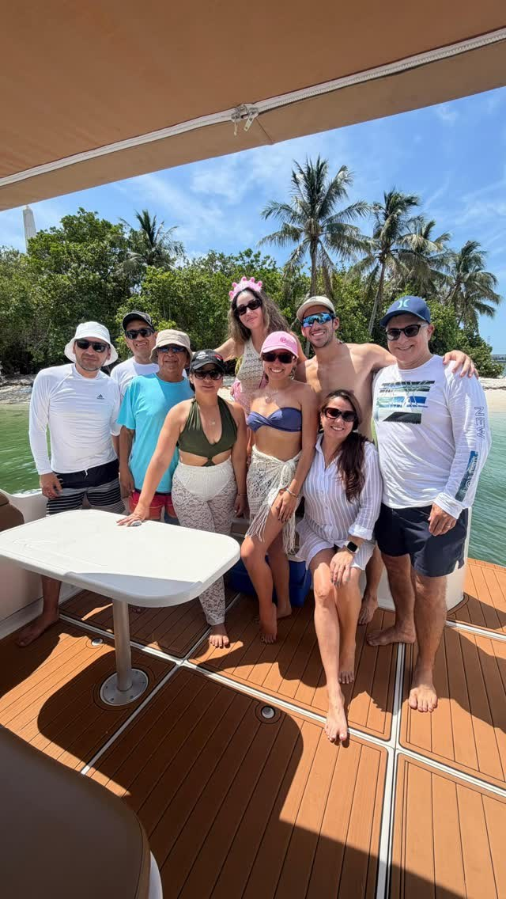
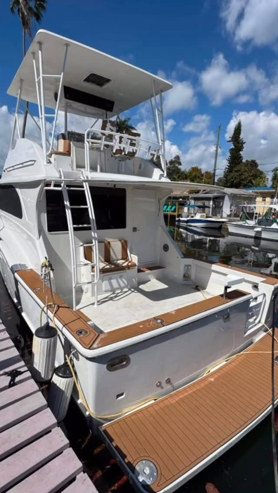

Equipos chicos, un bote, sin agencia de eventos
Para atender a un cliente, para sacar al equipo una tarde, o para cerrar el trimestre. Se reserva directo con el capitán, con tope de trece para que nadie vaya de pie, y con la factura como la necesita tu contabilidad.
El número que decide todo
Trece personas es el límite de la Guardia Costera en el Chris Craft 45, y cuenta a todos los que suben. Para una reunión de directivos, una tarde con un cliente o un equipo de diez, va cómodo. Para una empresa de cuarenta no — ahí es cuando salen los tres botes juntos y se amarran, y te lo decimos en el primer mensaje en vez de meter a cuarenta personas en una sola cubierta.
Si el grupo es más grande, la respuesta honesta casi siempre es un lugar con terraza y no un bote. Te lo vamos a decir.
El problema del que organiza nunca es el bote
Es la persona que no nada, la que se marea, la vegetariana, y el directivo con una llamada a las cuatro. Por eso aquí hablas con una persona y no con un centro de reservas. El capitán sabe el plan antes de empezar y respeta la hora de regreso.
Dinos la restricción al reservar. Alguien que prefiere no mojarse, una hora tope a las cinco, alguien que necesita sombra toda la tarde: cada cosa cambia en qué bote te ponemos, y no cuesta nada decirlo temprano.

Atender a un cliente y sacar al equipo no son la misma reserva
Para clientes el Chris Craft 45 es el indicado: salón para sentarse, baño de verdad con ducha, y cubierta suficiente para que la conversación no sea un solo grupo. Para una tarde de equipo en julio, el Sundancer 40 cubierto suele ser mejor, porque la sombra decide si alguien disfruta la quinta hora.
Trae tu comida y tus bebidas. No somos empresa de catering y no vamos a fingir que sí. Hay nevera, hielera con hielo y mesa en la bañera, y la mayoría pide una bandeja y la sube a bordo.
Preguntas sobre eventos de empresa
¿Pueden facturar a la empresa?
Sí. Mándanos el nombre de la empresa, la dirección y cualquier número de orden o referencia que pida tu contabilidad y va en la factura. El pago se arregla directo con nosotros, no con una plataforma que se queda una comisión.
¿Cuántas personas pueden ir?
Hasta 13 en el Chris Craft 45, contando a todos los que suben. Es un límite de la Guardia Costera, no una preferencia, así que no se estira el día del paseo.
¿Podemos llevar catering?
Trae lo que quieras. Hay nevera, hielera con hielo y mesa en la bañera. Nosotros no ponemos la comida, y preferimos decirlo claro antes que darte un menú que no podemos cumplir.
¿Y si cambia el clima?
Movemos la reserva. Nadie quiere a un cliente aguantando un chubasco, y un capitán que sale igual está cuidando su calendario y no tu evento.
Mándanos la fecha y cuántos son
Te devolvemos un solo número con bote, capitán y gasolina, más una factura con los datos que pida tu empresa. Si trece asientos no alcanzan, te lo decimos antes de que reserves nada.
Otras celebraciones
Despedida de soltera en bote
Hasta 13, el día entero en fotos, y la novia sin organizar nada.
Cumpleaños en bote
El bizcocho en frío, tu playlist, y el motor apagado con el downtown detrás.
Paseo al atardecer
Cuarenta minutos buenos, calculados hacia atrás desde el sol. El paseo más corto.
Día en el banco de arena
Agua a la cintura, arena blanca debajo, y la piscina flotante afuera.
Paseo en familia
Sombra todo el día, chalecos de niño de serie, y nadie con prisa.
Fotos con el skyline
Star Island, las casas grandes, y la hora en que la luz cae sobre la ciudad.
Grupos grandes
¿Son demasiados para un solo bote? Salen los tres juntos y se amarran en el banco de arena.
Noches románticas en el mar
El bote entero para dos, la mesa de la bañera, y un capitán que no sale en las fotos.
Esparcir cenizas en el mar
Un bote privado más allá de las tres millas, y todo el tiempo que necesites con el motor apagado.